Open Badges with Mozilla
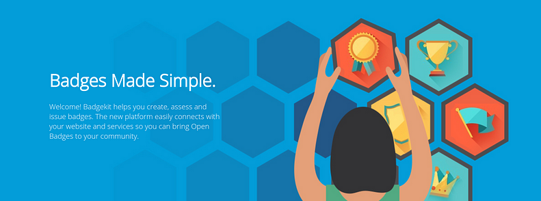
How I came to this project
Hurricane Sandy hit New York in 2012 and I took time to help rebuild my hometown of Rockaway Beach (that was deeply affected by the superstorm). I met several young veterans who had real skills but some of the shared that they did not have formal credentials to open doors to jobs. Their stories stayed with me and ultimately inspired me to shift my work to focus on Open Badges—creating ways for people to gain recognition for what they know and access new professional opportunities.
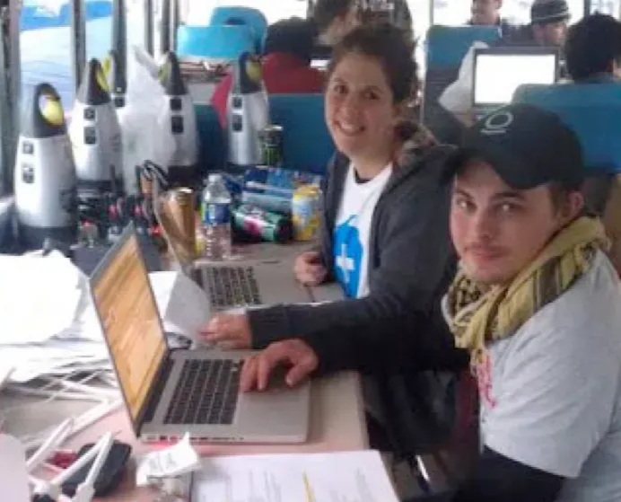
Team Rubicon veterans who were helping rebuild after the hurricane.
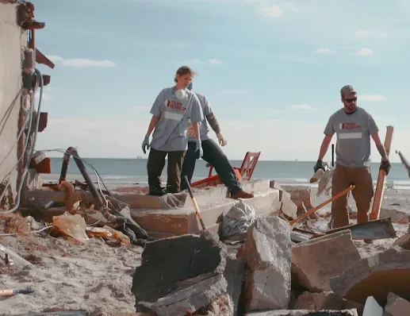
Explore
User Research
What are badges?
Open Badges are digital stickers that prove you learned or accomplished something. You can collect them online and show them to schools or employers, just like showing a certificate. The difference between a digital badge and an open badge is that if follows open standard. (Think “interoperability,” not platform lock-in.)
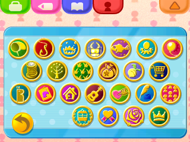
A badge collection from Animal Crossing game
"If you ever find yourself in a tough spot, look at your badges and remember what you're capable of!"— Phineas, Animal Crossing: New Leaf
When you think of digital badges, think of games, such as Animal Crossing - where badges can unlock access, recognize an achievement or give you new capabilities.
The Open Badges whitepaper and technical specification were already in place when I joined, thanks to Mozilla, P2PU, and the MacArthur Foundation. My role was to build the tools that made the concept real—and to translate that reality for different types of users.
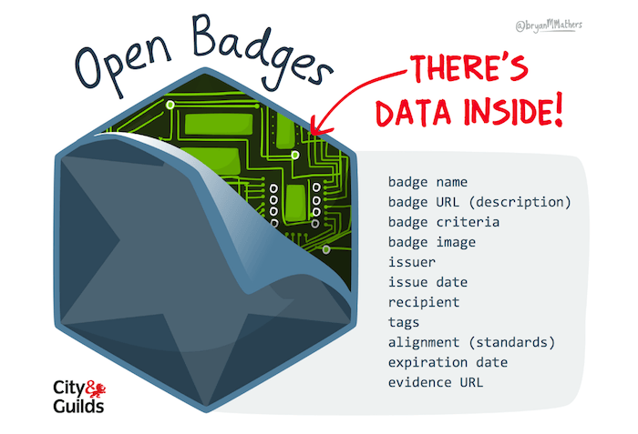
Open Badges (P.S. There’s Data Inside) by Visual Thinkery is licensed under CC-BY-ND
Partnering with the HIVE Learning Network in New York and Chicago, I conducted in-person field research across out-of-school learning environments—observing how people actually learned, interviewing users, and mapping the ecosystem of support around each learner to inform our Open Badges work.
- Research methods used throughout the project
- Field observations in out-of-school learning environments
- Semi-structured user interviews with learners, educators and employers
- Contextual inquiry in libraries and community spaces
- Ecosystem mapping of learner supports (people, programs, institutions)
- Participatory workshops / co-design sessions with community members
- Qualitative synthesis into personas, journeys, and opportunity areas
Define
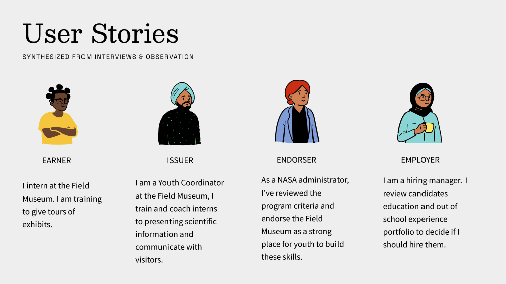
Hypotheses
Equipping learners with tools to control and display their credentials will elevate both formal and informal learning because it allows them to tell a complete story of their skills to future employers.
Giving educators and organizations standard (but not centralized) tools to issue badges makes it easier to recognize skills learned outside school, because employers and schools can understand and trust them.
intervention action logic
Make and Validate
Prototyping and Testing Strategy
-
Design: Create a model badge system where educators, organizations, and institutions can issue credentials, learners can earn and share them across contexts, and employers can recognize achievements that extend beyond traditional classrooms.
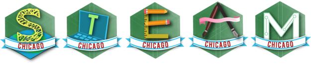
-
Engage: Collaborate with educators and mentors in both formal environments (schools) and informal spaces (libraries, community programs, online platforms, and gaming communities). Help them to make their own badges and badge assessments.
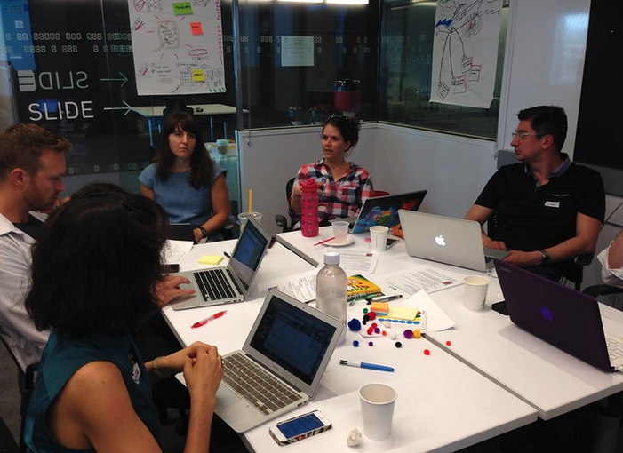
Educator badge training workshop
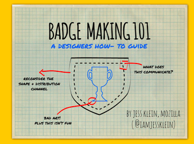
I ran virtual and in person workshops with organizations and individuals who support learners to teach them how to incorporate badges into their workflows.
-
Test & Iterate: Test the proof-of-concept for usability and practicality. Identify additional tools, features, concepts.
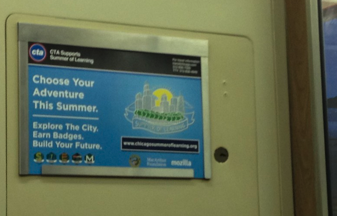
We tested with organizations all over Chicago. This was an ad on the CTA for the Summer of Learning.
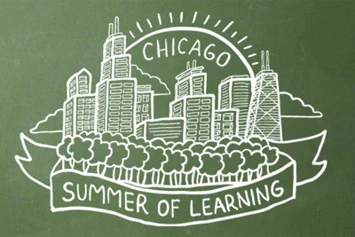
The Chicago Summer of Learning (CSL) was a major city-wide initiative that coordinated numerous summer programs for Chicago youth, focusing on STEAM. Open badges was the designed to recognize the skills happening on and offline.
Lo-Fi and Participatory Design
At the Mozilla Foundation, I co-piloted the Chicago Summer of Learning with the incumbent mayor of Chicago, Mayor Rahm Emanuel and the MacArthur Foundation, working closely with educators and teens to shape the global framework for digital badges. I worked openly, sharing in-process designs, blogging, facilitating workshops and presenting the core concepts.
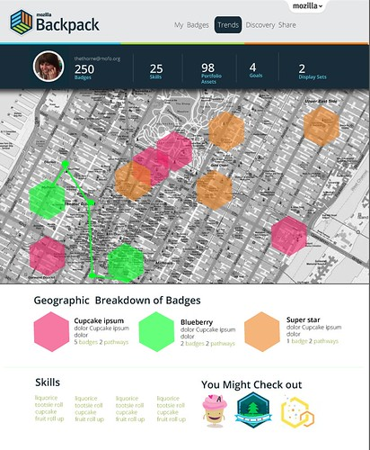
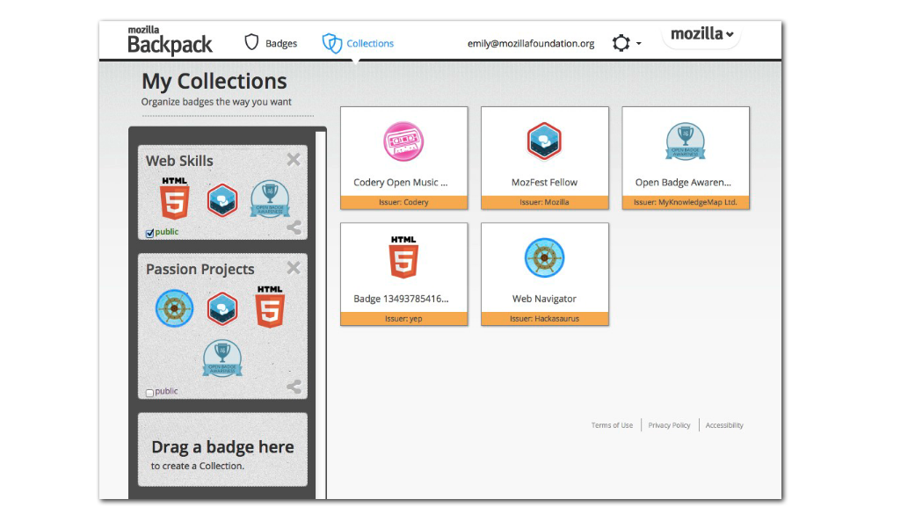
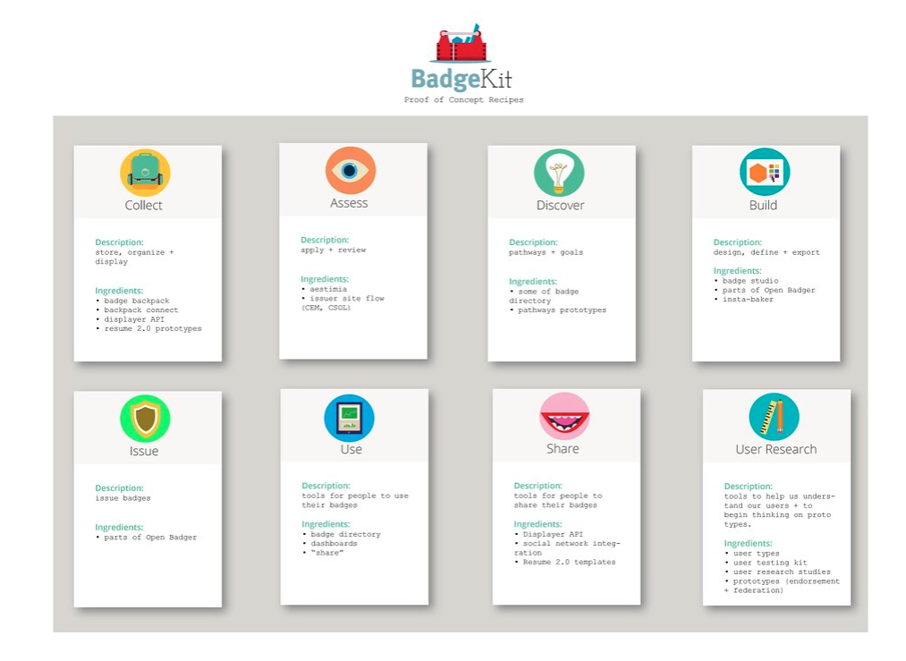
I created tons of mockups and sketches for community feedback before locking down designs.
What we made
While the website, badges and tools that we created for the Chicago Summer of Learning were innovative, the documentation that we created as a cohort has had lasting impact on the global badges community.
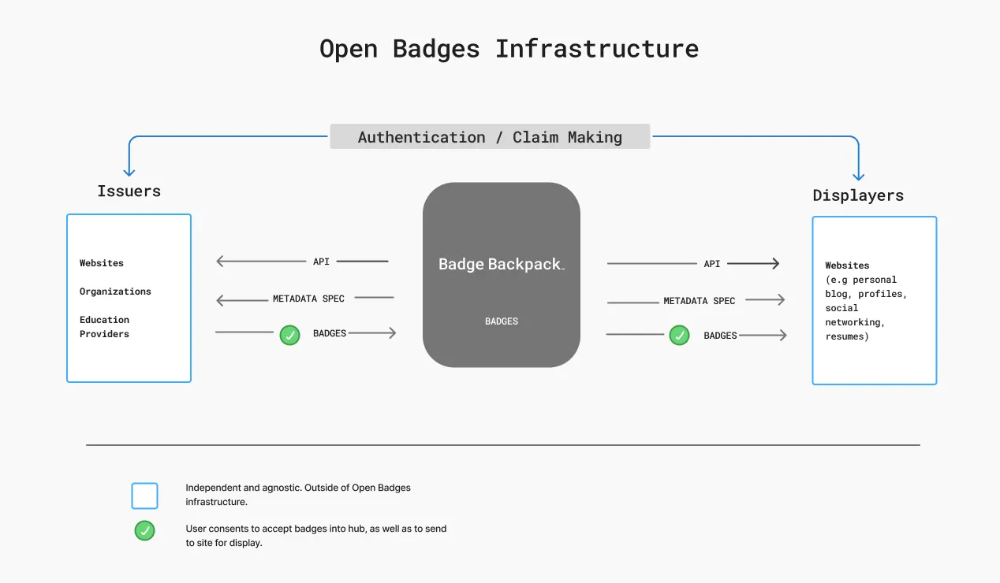
The open badges infrastructure (OBI) allows learners to collect, manage and showcase verified skills and achievement from diverse sources in a digital “backpack”, creating a comprehensive portable portfolio to share.
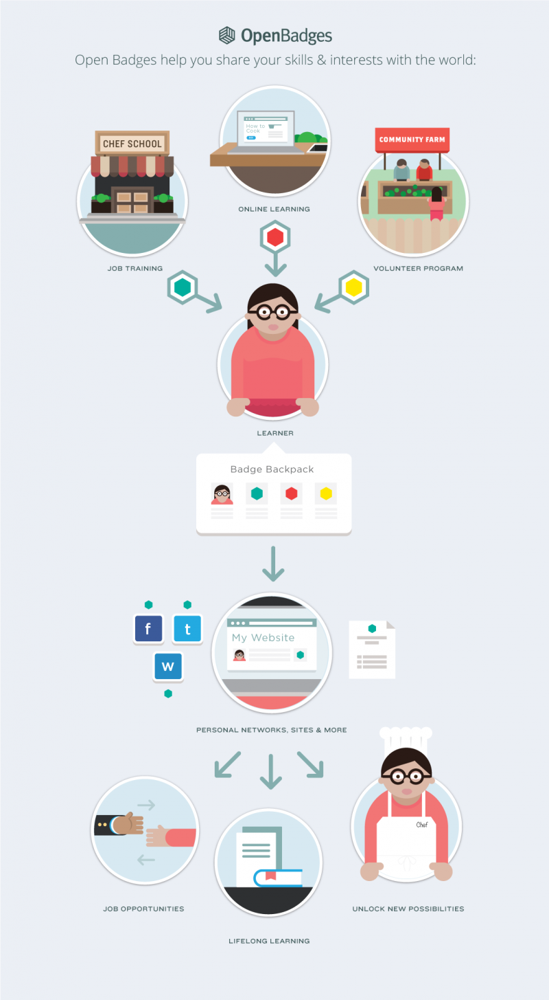
The suite of tools enables learners to tell their complete learning story.
- Chicago Summer of Learning Website - with a badge builder here’s a great blogpost overview
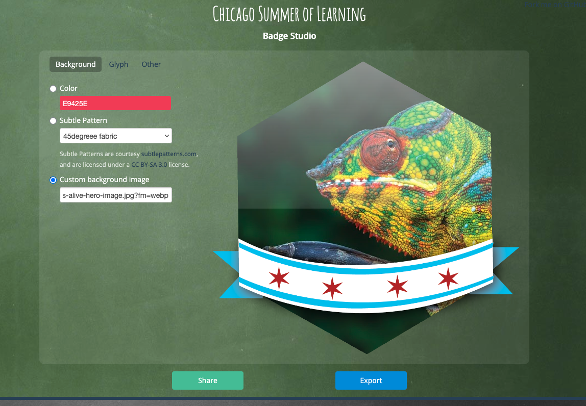
Badge Studio was a key feature for individuals and organizations who support learners to design badges that adhered to the CSOL design system.
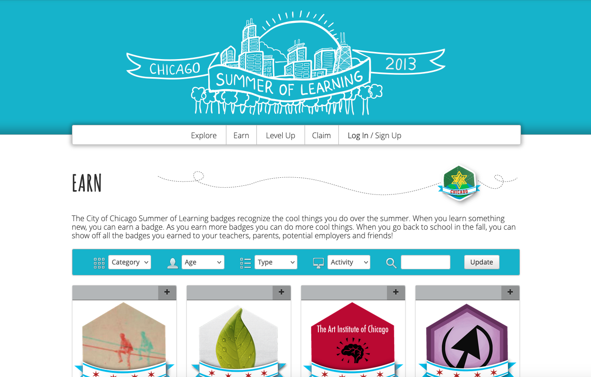
https://www.youtube.com/watch?v=ZN93OPQdmEY
- Badge Kit: an open sources suit of tools to issue and assess, collect and share micro-credentials
https://www.youtube.com/watch?v=uvz-chEpi7Q
Writing about this work
- BadgeKit: An Invitation to Innovation
- Badgeopolis: Form follows emotion
- Prototyping Peer Assessment for Webmaker
- Design Feedback for Badge Systems
- Demo: Getting Badges into Thimble
- Badges, Assessment and Webmaker+
- New Learning and Teaching Models with a Focus on Micro and Digital Credentialing Report